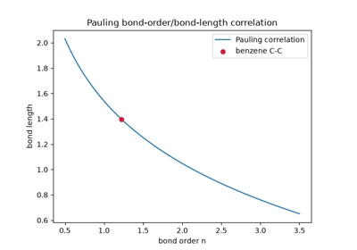

Breakthroughs in Molecular Structure#
“Chemists were long accustomed to picturing molecules as more or less rigid structures… the more precise our knowledge, the more we realize that this rigidity is not literally true, but the geometric picture remains indispensable.” – paraphrasing the shift, over the century this chronology covers, from bonds drawn as simple connecting lines to bonds understood as electron-pair phenomena with a genuine three-dimensional shape and a discoverable symmetry.
Structural chemistry asks a deceptively simple question: given a
molecular formula, what shape does the molecule actually take, and why?
chemistrykit.structure gathers the computational core of the
answer chemistry has assembled over a century and a half – Lewis
structures and formal charge/oxidation-state bookkeeping, VSEPR geometry
prediction from real 3D electron-domain coordinates, point-group
symmetry classification from direct geometric testing, and two
independent routes to a bond order. This chronology traces the major
breakthroughs behind it, from van’t Hoff and Le Bel’s 1874 proposal that
carbon’s four bonds point toward a tetrahedron’s corners to the
group-theoretic notation this package’s own character tables still use,
with a pointer to the corresponding implementation in this package at
each stop.
1874 – Van’t Hoff and Le Bel’s Tetrahedral Carbon#
Jacobus van’t Hoff and Joseph Le Bel, working independently and publishing within months of each other, proposed the founding result of structural stereochemistry: a carbon atom’s four valence bonds are not confined to a plane but point toward the four vertices of a regular tetrahedron. The proposal explained, at a stroke, a puzzle organic chemists had accumulated data on for years without a structural account – optical isomerism, the existence of two distinct, mirror-image forms of certain compounds that rotate polarized light in opposite directions – by showing that a tetrahedral carbon bonded to four different substituents has no internal mirror symmetry, so its mirror image is a genuinely different, non-superimposable molecule (an enantiomer), while a planar or other non-tetrahedral arrangement would not produce this effect at all. The proposal was not universally welcomed: Hermann Kolbe, a chemist of considerable standing, published a scathing 1877 rebuttal dismissing van’t Hoff’s reasoning as fantastical, unfounded speculation from someone who found the discipline of exact chemical research distasteful – a reaction the tetrahedral-carbon model outlived by well over a century.
Implementation:
domain_positions() generates
exactly this tetrahedral vertex arrangement for a steric number of 4 (the
same construction used for methane in
build_vsepr_molecule()), with
every pair of vertices subtending the exact tetrahedral angle,
109.4712 degrees; building a tetrahedral center with four genuinely
different substituents on top of those same coordinates and testing
whether its mirror image can be superimposed on the original by any
proper rotation is a direct, from-scratch numerical demonstration of
van’t Hoff and Le Bel’s stereochemical claim.
References: J. H. van ‘t Hoff, “Sur les formules de structure dans l’espace,” Archives Néerlandaises des Sciences Exactes et Naturelles 9, 445-454 (1874); J. A. Le Bel, “Sur les relations qui existent entre les formules atomiques des corps organiques et le pouvoir rotatoire de leurs dissolutions,” Bull. Soc. Chim. Fr. 22, 337-347 (1874).

Van’t Hoff and Le Bel’s tetrahedral carbon: chirality from real 3D coordinates
1891 – Schoenflies and Point-Group Notation#
Building on Johann Hessel’s little-noticed 1830 enumeration of the 32 crystallographic point groups and Auguste Bravais’s independent 1849 rediscovery of them, Arthur Schoenflies – working in close (and at times competitive) parallel with the Russian crystallographer Evgraf Fedorov – gave crystal and molecular symmetry a systematic algebraic notation in his 1891 Krystallsysteme und Krystallstructur: a symmetry group is named by its defining generators, a principal rotation axis \(C_n\), the dihedral \(D_n\) families with perpendicular \(C_2\) axes, the mirror-plane refinements \(\sigma_h\)/ \(\sigma_v\)/\(\sigma_d\), an inversion center \(i\), and the improper-rotation axes \(S_n\), combined into symbols like \(C_{2v}\), \(D_{3h}\), or \(T_d\). Where Fedorov’s contemporaneous, independently derived classification of the 230 space groups is the crystallographer’s standard reference today, it is specifically Schoenflies’s point-group symbols – built for the finite, non-translational symmetry of an individual molecule or crystal motif rather than an infinite periodic lattice – that became, and remains, the universal notation for molecular symmetry in chemistry.
Implementation: every point group
determine_point_group()
returns – "C2v", "Td", "D_inf_h", and so on – is spelled in
exactly Schoenflies’s own notation, and
PointGroupCharacterTable
together with CHARACTER_TABLES
tabulate the standard character tables under that same naming scheme.
References: A. Schoenflies, Krystallsysteme und Krystallstructur (Teubner, Leipzig, 1891). A book, not a journal article – there is no DOI to cite. The parallel priority of Fedorov’s independent space-group derivation (published in Russian in the same period) is well documented in the crystallographic literature but not itself the source of the point-group notation this package uses.

Point-group determination for water, ammonia, methane, and carbon dioxide
1893 – Werner’s Coordination Theory#
Alfred Werner proposed, in “Beitrag zur Konstitution anorganischer Verbindungen,” that a transition-metal complex’s ligands occupy fixed geometric positions around the central metal – six ligands at the vertices of an octahedron, or four at the corners of a square plane or a tetrahedron – fundamentally distinct from and independent of the metal’s own ordinary ionic valence. At a time decades before X-ray crystallography or any other technique could directly image a molecule’s three-dimensional shape, Werner supported this entirely through painstaking indirect evidence: counting the number of distinct isomers a given complex could be resolved into, and showing that only his proposed octahedral (rather than, say, hexagonal-planar) geometry predicted the correct number of isomers for compound after compound. He was awarded the 1913 Nobel Prize in Chemistry for this work, becoming the first inorganic chemist to receive it. Werner’s octahedral six-coordination is not confined to transition-metal complexes; it is exactly the electron- domain arrangement VSEPR theory (see 1940-1970, below) later predicted from first principles for any steric-number-6 center, transition metal or main-group alike.
Connection: domain_positions()
with steric_number=6 generates precisely Werner’s proposed
octahedral vertex arrangement, and
determine_point_group()
classifies a regular six-coordinate structure built on those vertices as
\(O_h\) – recovering, by direct geometric symmetry testing rather
than isomer-counting, the same octahedral picture Werner had to infer
indirectly; chemistrykit.structure.systems.point_group’s recently
fixed handling of the four body-diagonal \(C_3\) axes an
\(O_h\) structure requires (see the module’s candidate-axis
docstring) is exactly what makes that classification correct for a
genuinely six-coordinate, cardinal-axis-ligand geometry.
References: A. Werner, “Beitrag zur Konstitution anorganischer Verbindungen,” Z. Anorg. Chem. 3, 267-330 (1893).

Octahedral symmetry: SF6, Werner’s six-coordinate complexes, and the Oh character table
1916 – Kossel’s Ionic Bond and the Two Extremes of Bond Polarity#
In the same year as Lewis’s covalent-bond paper, and entirely independently, Walther Kossel proposed the complementary extreme: a bond forms when one atom transfers an electron (or several) outright to another, each ending up with a noble-gas electron configuration as a charged ion, held together purely by electrostatic (Coulombic) attraction rather than any shared electron pair. Real bonds, of course, sit somewhere between Kossel’s fully ionic picture and Lewis’s fully covalent, evenly shared one – the actual electron distribution shifts toward whichever atom is more electronegative, but rarely transfers completely – and the two men’s independent, same-year papers are naturally read today as marking out the two idealized limits that real, partially polar bonds interpolate between. Oxidation state is the electron-bookkeeping convention built on Kossel’s ionic extreme, exactly as formal charge is built on Lewis’s evenly-shared one: assign every bonding pair entirely to its more electronegative partner (split evenly only for a homonuclear bond, where neither atom has a legitimate claim to more), and compare the resulting electron count to the free atom’s.
Implementation:
oxidation_states()
implements exactly this fully-ionic-limit bookkeeping, using Pauling-scale
electronegativities from chemistrykit.periodic_table.electronegativity()
to decide, bond by bond, which atom is assigned the shared electrons –
the direct computational counterpart of
formal_charges()’s
evenly-split, Lewis-style convention on the very same
LewisStructure.
References: W. Kossel, “Über Molekülbildung als Frage des Atombaus,” Ann. Phys. 354, 229-362 (1916).
Formal charge and oxidation state from a Lewis structure
1929 – Bethe’s Crystal-Field Theory and Group Theory Enters Chemistry#
Hans Bethe’s “Termaufspaltung in Kristallen” asked what happens to a free ion’s electronic energy levels once it is placed inside a crystal (or, in the molecular reading adopted a few years later, at the center of a coordination complex’s ligand arrangement): the surrounding electrostatic field, no longer spherically symmetric but only as symmetric as the local point group, splits levels that were degenerate in the free ion into separate sub-levels, in a pattern group theory alone – without any detailed calculation of the field’s actual strength – can predict completely. Bethe’s paper was the first systematic demonstration that a molecule or crystal site’s point-group symmetry, treated by its formal group-theoretic machinery (irreducible representations, character tables), directly constrains which physical splittings and which spectroscopic transitions are allowed, independent of any detail of the interatomic forces involved – the origin of what would later be called crystal-field and ligand-field theory, and the entry point of formal group theory into chemistry more broadly. Applied to a six-coordinate octahedral complex, Bethe’s analysis shows a transition-metal ion’s five formerly degenerate d-orbitals split into two sets transforming as the octahedral group’s \(e_g\) and \(t_{2g}\) irreducible representations – the single most-cited result of crystal-field theory, and still the first thing taught in any treatment of transition-metal complex color and magnetism.
Implementation:
get_character_table()
returns exactly the \(O_h\) character table Bethe’s analysis is built
on, with PointGroupCharacterTable’s
Eg/T2g irreps (and their tabulated dimensions, 2 and 3
respectively) the same labels crystal-field theory attaches to the split
d-orbital sets – the group-theoretic classification machinery this
package implements is precisely the tool Bethe’s theory needs, applied
here to a concrete \(O_h\) structure (sulfur hexafluoride) rather
than a transition-metal complex, since chemistrykit.structure
does not model transition-metal electronic structure directly.
References: H. Bethe, “Termaufspaltung in Kristallen,” Ann. Phys. 395, 133-208 (1929).
Octahedral symmetry: SF6, Werner’s six-coordinate complexes, and the Oh character table
1932 – Pauling’s Electronegativity Scale#
Linus Pauling, in the fourth installment of his landmark “The Nature of the Chemical Bond” series, noticed that a bond between two different elements is almost always stronger than the average of the two corresponding homonuclear bonds’ strengths – an “extra ionic energy” he attributed to the bond’s partial ionic character, and which he showed could be used to define a self-consistent, quantitative scale of each element’s tendency to attract shared electrons: electronegativity. The resulting Pauling scale (fluorine assigned the highest value, 3.98, by convention) let chemists move past qualitative, ad hoc statements about which atoms “want” electrons more and instead compute or measure the ionic character of a specific bond directly from the electronegativity difference between its two atoms – one part of Pauling’s broader program in The Nature of the Chemical Bond (collected as a monograph in 1939), which also included the hybridization and resonance concepts that gave quantum mechanics a usable, qualitative vocabulary for practicing chemists. Pauling was awarded the 1954 Nobel Prize in Chemistry for this body of work.
Implementation:
chemistrykit.periodic_table.electronegativity() tabulates exactly
the Pauling scale values this paper introduced, and
oxidation_states()
(see 1916, above) uses them directly to decide, bond by bond, which atom
is the more electronegative partner – the same electronegativity
comparison Pauling’s own ionic-character argument is built on.
References: L. Pauling, “The Nature of the Chemical Bond. IV. The Energy of Single Bonds and the Relative Electronegativity of Atoms,” J. Am. Chem. Soc. 54, 3570-3582 (1932).
Formal charge and oxidation state from a Lewis structure
1939 – Coulson’s Molecular-Orbital Bond Order#
Charles Coulson, applying Erich Huckel’s decade-old pi-electron molecular-orbital theory to conjugated and aromatic hydrocarbons, defined a bond order directly from the resulting molecular-orbital coefficients rather than from any experimentally measured bond length:
summed over occupied molecular orbitals \(k\) weighted by their electron occupation \(n_k\). Applied to benzene, this gives a pi bond order of exactly 2/3 for every carbon-carbon bond – neither the single nor the double bond a single Kekule structure would suggest, but the delocalized average consistent with all six ring bonds being experimentally identical in length. The Coulson bond order gave chemists a genuinely independent, first-principles-electronic-structure route to the same fractional-bond-order concept Pauling’s contemporary empirical length correlation (see 1947, below) reached from measured geometry alone – two unrelated methods converging on the same answer for benzene’s bonding is, still today, one of the standard textbook demonstrations that aromatic delocalization is real rather than a mere notational convenience.
Implementation:
coulson_pi_bond_order()
implements exactly this formula, computed directly from
chemistrykit.quantum.systems.huckel.HuckelSystem’s molecular-
orbital coefficients – reusing chemistrykit.quantum’s existing
Huckel-theory machinery rather than re-deriving it, since Coulson’s bond
order is a direct property of the Huckel molecular orbitals themselves.
References: C. A. Coulson, “The Electronic Structure of Some Polyenes and Aromatic Molecules. VII. Bonds of Fractional Order by the Molecular Orbital Method,” Proc. R. Soc. Lond. A 169, 413-428 (1939).

Bond order: the Pauling length correlation, and the Huckel Coulson bond order
1940 – 1970 – Sidgwick, Powell, Gillespie, and Nyholm: VSEPR Theory#
Nevil Sidgwick and Herbert Powell’s 1940 Bakerian Lecture, “Stereochemical Types and Valency Groups,” first proposed systematically that a central atom’s molecular shape is governed simply by the number of electron pairs (bonding and lone) in its valence shell arranging themselves to minimize mutual repulsion, treating both kinds of pair as occupying comparable, roughly equivalent regions of space around the nucleus. Ronald Gillespie and Ronald Nyholm developed the idea into a complete, quantitatively predictive theory in their 1957 “Inorganic Stereochemistry” – crucially adding the refinement that a lone pair, being more diffuse and held closer to the nucleus than a bonding pair, repels its neighbors more strongly, systematically compressing the bond angles around it relative to the idealized polyhedron (real ammonia’s 106.7-degree H-N-H angle and water’s 104.5-degree H-O-H angle, both compressed from a parent tetrahedron’s 109.47 degrees, are the textbook illustrations). Gillespie gave the resulting model its now-standard pedagogical form, and its name, in a widely read 1970 article. For a steric number of \(N\) electron domains, the model predicts one of five idealized parent polyhedra – linear, trigonal planar, tetrahedral, trigonal bipyramidal, octahedral – with lone pairs then displacing specific vertices to produce the full catalogue of real molecular shapes (bent, trigonal pyramidal, seesaw, T-shaped, square pyramidal, square planar, and more).
Implementation:
domain_positions() generates
the five idealized polyhedra’s genuine 3D vertex coordinates directly
from their defining symmetry (not a shape-name lookup table), and
VSEPRGeometry together with
build_vsepr_molecule()
implement Gillespie and Nyholm’s lone-pair-placement rule – lone pairs
preferentially occupy the least sterically crowded available positions –
reproducing water’s bent AX2E2 shape, sulfur tetrafluoride’s seesaw
AX4E1 shape, and xenon tetrafluoride’s square-planar AX4E2 shape exactly
this way, with AXE_SHAPE_NAMES
tabulating Gillespie’s own AXE nomenclature for each combination.
References: N. V. Sidgwick and H. M. Powell, “Bakerian Lecture. Stereochemical Types and Valency Groups,” Proc. R. Soc. Lond. A 176, 153-180 (1940); R. J. Gillespie and R. S. Nyholm, “Inorganic Stereochemistry,” Q. Rev. Chem. Soc. 11, 339-380 (1957); R. J. Gillespie, “The Electron-Pair Repulsion Model for Molecular Geometry,” J. Chem. Educ. 47, 18-23 (1970).

VSEPR geometry prediction: from steric number to real 3D coordinates
1947 – Pauling’s Bond-Order/Bond-Length Correlation#
Linus Pauling observed empirically that, within a family of similar bonds (carbon-carbon bonds, most famously), a bond’s length shrinks in a consistent, logarithmic way as its bond order increases:
with \(D(1)\) a reference single-bond length and \(c\) an empirically fitted, bond-type-specific constant (Pauling’s own value for carbon-carbon bonds, 0.71 angstrom). Inverting the relation lets a measured, non-integer bond length be converted directly into an estimated, generally non-integer bond order – applied to benzene’s carbon-carbon bond length of 1.397 angstrom (intermediate between ethane’s 1.54-angstrom single bond and ethylene’s 1.34-angstrom double bond), the correlation predicts a bond order between 1 and 2, an entirely independent empirical confirmation of the same delocalized-bonding picture Coulson’s molecular-orbital theory (see 1939, above) reaches from the electronic structure side rather than the geometric one.
Implementation:
bond_order_from_length() and
its exact inverse
bond_length_from_order()
implement exactly this formula, with
PAULING_C_C_CONSTANT
Pauling’s own carbon-carbon correlation constant (flagged explicitly in
the module as needing re-fitting for any other bond type, which this
module does not tabulate).
References: L. Pauling, “Atomic Radii and Interatomic Distances in Metals,” J. Am. Chem. Soc. 69, 542-553 (1947).
Bond order: the Pauling length correlation, and the Huckel Coulson bond order
1955 – Mulliken’s Notation for Molecular Term Symbols#
As group-theoretic methods spread through molecular spectroscopy in the decades after Bethe’s crystal-field paper, different research groups had adopted inconsistent, sometimes conflicting labels for a molecule’s irreducible representations – an obstacle to comparing results across the growing literature. Robert Mulliken’s 1955 “Report on Notation for the Spectra of Polyatomic Molecules,” prepared for and endorsed by the Joint Commission for Spectroscopy, standardized the convention still used universally today: a one-dimensional representation is labeled \(A\) (symmetric under the principal rotation) or \(B\) (antisymmetric under it), a two-dimensional one \(E\), and a three-dimensional one \(T\), with a subscript \(g\)/\(u\) marking symmetric/antisymmetric behavior under inversion (for centrosymmetric groups) and numeric subscripts distinguishing multiple representations that would otherwise share the same letter. Mulliken received the 1966 Nobel Prize in Chemistry for his broader body of work on chemical bonds and the electronic structure of molecules, of which this notational standardization was a comparatively small, but enduringly practical, contribution.
Implementation: every irreducible-representation label in
chemistrykit.structure.systems.point_group.CHARACTER_TABLES –
"A1", "B2", "Eg", "T2u", and so on, for every point group
this package tabulates – is spelled in exactly Mulliken’s notation, and
character()
looks up a specific character by exactly these labels.
References: R. S. Mulliken, “Report on Notation for the Spectra of Polyatomic Molecules,” J. Chem. Phys. 23, 1997-2011 (1955).
Point-group determination for water, ammonia, methane, and carbon dioxide
1969 – Musher and Hypervalent Bonding#
Molecules like sulfur hexafluoride, phosphorus pentachloride, and xenon tetrafluoride pose a puzzle Lewis’s 1916 octet rule (see above) does not obviously resolve: their central atoms are bonded to five or six neighbors, apparently exceeding the eight-electron limit an s-and-p valence shell should allow. For decades the standard explanation invoked participation of the central atom’s empty d-orbitals to accommodate the extra bonds; James Musher’s 1969 review, “The Chemistry of Hypervalent Molecules,” gave the whole class of such species its now-standard name and argued for treating them as a coherent structural category in their own right, distinct from ordinary (octet-obeying) molecules – a framing that anticipated, and helped motivate, the modern three-center-four-electron bonding picture that later largely displaced the d-orbital explanation, which quantitative calculations have since shown contributes only marginally to real hypervalent bonding. Crucially, VSEPR’s electron-domain counting (see 1940-1970, above) never depended on which bonding picture – d-orbital participation, three-center-four-electron bonds, or otherwise – turned out to be correct: it predicts a hypervalent center’s geometry correctly regardless of the underlying electronic mechanism, simply by counting domains.
Connection: domain_positions()
generates the five- and six-domain polyhedra (trigonal bipyramidal,
octahedral) that every hypervalent AX5/AX6-type molecule this package’s
own gallery builds – sulfur tetrafluoride, xenon tetrafluoride, sulfur
hexafluoride – relies on, entirely independent of any specific bonding-
model explanation for how a main-group atom accommodates more than four
electron domains at all.
References: J. I. Musher, “The Chemistry of Hypervalent Molecules,” Angew. Chem. Int. Ed. 8, 54-68 (1969).
VSEPR geometry prediction: from steric number to real 3D coordinates